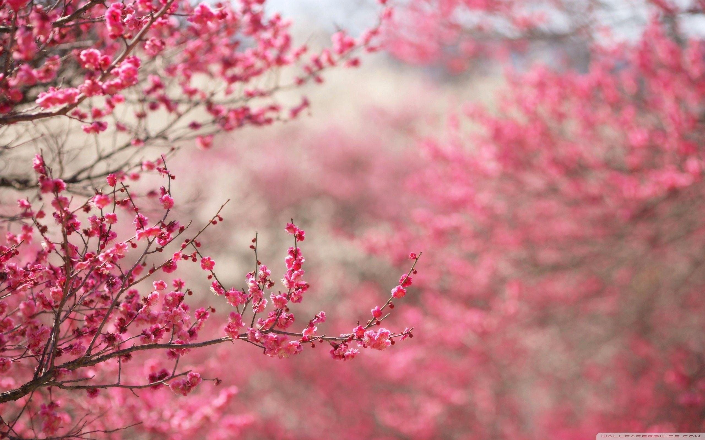
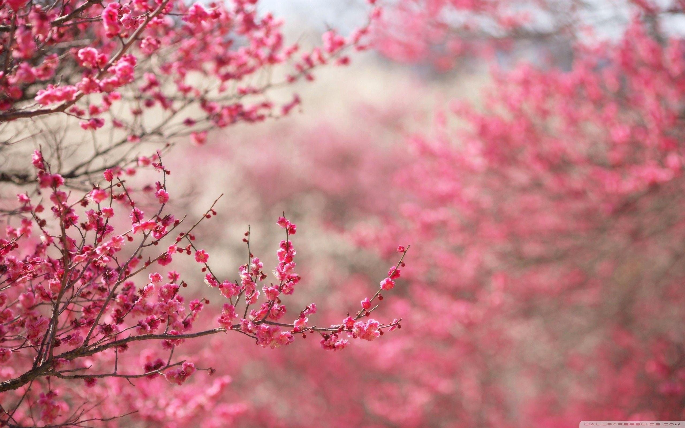

.jpg)
 

When you think of springtime Japan, a sea of cherry trees awash with perfect pink swaying blooms is the image that is definite to flood your mind. Such is the magic of cherry blossoms or Sakura as it is known. While thousands of tourists descend upon Japan to view this natural spectacle, the locals too await it eagerly for enjoying Hanami – the tradition of viewing the cherry blossom en masse – or attending blossom festivals. If you too have been planning to witness this natural wonder first hand, now is the perfect time to plan your travel, as the cherry trees typically bloom in late March or early April.
Sakura Spotting in 2019
The Japan Weather Association recently issued estimated dates for the cherry blossom season in different parts of the country. This estimated window for cherry blossom viewing is drawn up on basis of data collected in the previous years and suggests that Sakura season is likely to set in a little early across Japan.

The recommended dates for seeing cherry flowers in full bloom at some of the sought-after Hanami destinations are March 19 for Tokyo, March 22 for Hiroshima, March 26 for Osaka and April 4 for Kyoto. Fukuoka will be one of the first places to witness the bloom, around March 16, whereas Sapporo in north Japan will see the first cherry flowers around May 1, with full bloom expected to hit on May 3.
Read more:
- Tokyo: March 19 – March 31
- Kyoto: March 25 – April 2
- Osaka: March 26 – April 2
- Hiroshima: March 22 – March 29
- Sapporo: May 1 – May 7
- Tokyo: March 19 – March 31